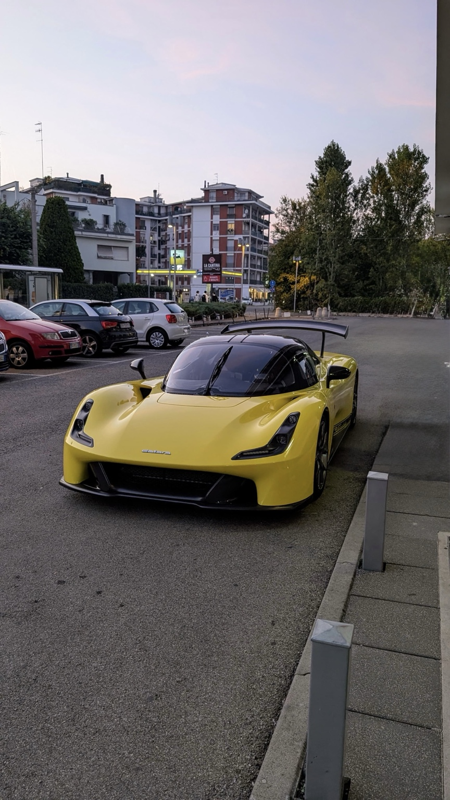
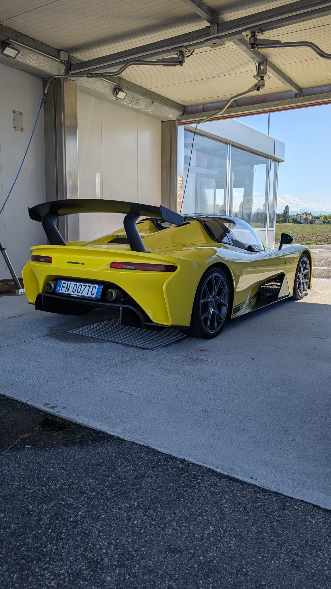

Dallara Stradale Serial #007
547
horsepower per tonne
Dallara Stradale Importers
Acquire the legendary Dallara Stradale. Professionally sourced by Giampaolo Services, legally federalized for United States roads, and maintained by elite Italian mechanics.
Initiate Sourcing ConsultationThe Pedigree
Before his name ever graced a single chassis of his own company, Giampaolo Dallara was the quiet genius behind the curtain of motorsport's greatest triumphs.
He engineered the revolutionary Lamborghini Miura, built the scaffolding for modern IndyCar safety, and shaped the aerodynamics of Le Mans champions.
The Stradale is the only road car he ever signed. Built with a pure carbon fiber monocoque and generating an astonishing 820 kg of aerodynamic downforce, it represents his uncompromised automotive legacy.
Dallara Automobili
Dallara’s influence extends far beyond the Stradale. Its engineering work has supported Alfa Romeo, Lamborghini, Ferrari, Bugatti, the BAC Mono, the KTM X-Bow, Formula 1 programs, every modern IndyCar chassis, and Formula E competition.
Across those programs, the common language is the same: exceptionally low mass, structural precision, and aerodynamic downforce engineered to turn speed into control.
The Great Equalizer
Dallara Stradale Serial #007
horsepower per tonne
Comparison uses client-supplied figures and should be verified against the exact model year and configuration before publication.
Downforce Comparison
Downforce increases tire loading without adding equivalent vehicle mass, helping a car corner harder, brake later, and remain stable as speed rises.
Figures are illustrative and may vary by model year, configuration, speed, and test conditions.
The Proof of Concept
We don't deal in hypotheticals. Our operations are anchored by our own early-production, signature-series Dallara Stradale, finished in the same factory Giallo Modena specification as the Engineer's personal Serial #001 car.

Chassis #007
Our own early-production Dallara Stradale demonstrates the complete sourcing, import, federalization, and servicing process we provide for private clients.
Production is limited to a maximum of 600 Stradale units worldwide, although future European regulations could prevent completion of the full production run.
Giampaolo Services can also assist clients in sourcing a new car directly from the factory, subject to availability and factory allocation.



Our Process
01
We leverage our deep European network to scout, mechanically audit, and acquire pristine, verified Dallara Stradale units directly from private collections.
02
Navigating NHTSA compliance, Show or Display exemptions, and EPA entry frameworks requires absolute precision. We handle the red tape flawlessly from port to title.
03
Located in Grand Junction, our private workshop is anchored by an authentic, factory-trained Italian master mechanic. From track-alignment setups to carbon tub maintenance, your investment is secure.
Begin Your Journey
Tell us how you would configure your ideal Dallara Stradale and we will follow up to discuss sourcing options, including available pre-owned cars and potential factory orders.
Call us at 970-519-1151